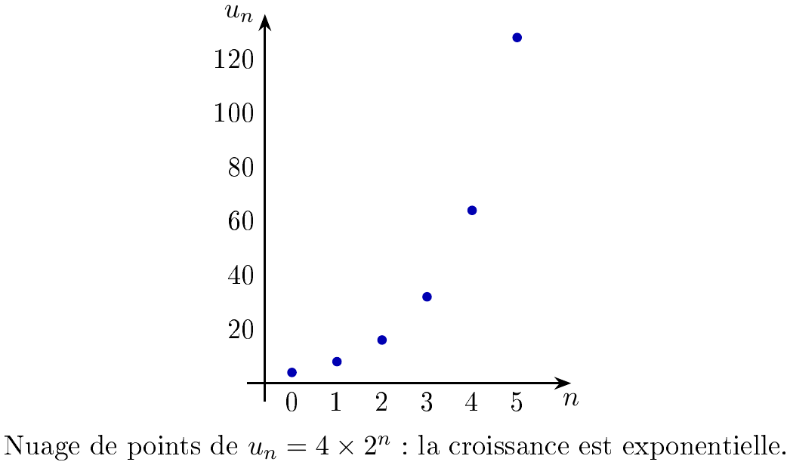

Chapitre I : Suites et sommes
Terminale STMG · Chapitre 1 — Suites et sommes · cours de Frederik de Peyrelongue
I. Suites arithmétiques
1.1 Définition
Une suite arithmétique est une suite de nombres dans laquelle chaque terme permet de déduire le suivant par addition d'un terme constant $r$ appelé raison.
La définition peut s'écrire sous la forme d'une relation de récurrence, c'est-à-dire que pour chaque entier naturel $n$ :
Cette relation est caractéristique de la progression arithmétique.
1.2 Propriétés
Toute suite arithmétique de raison $r$ et de premier terme $u_{0}$ admet une formule explicite :
Soit $(u_{n})$ défini par
Alors, pour tout $n\in\N$, $u_{n}=7+2n$.
Une suite arithmétique forme un nuage de points alignés. Le coefficient directeur de la droite est la raison de la suite, et l'ordonnée à l'origine correspond au premier terme $u_{0}$.
1.3 Sens de variation
Soit $(u_{n})$ une suite arithmétique de raison $r$ :
- si $r>0$, la suite $(u_{n})$ est strictement croissante ;
- si $r<0$, la suite $(u_{n})$ est strictement décroissante ;
- si $r=0$, la suite $(u_{n})$ est constante.
1.4 Somme des termes d'une suite arithmétique
Pour tout $n$ entier,
Soit $(u_{n})$ une suite arithmétique de raison $r$. Alors
Et, plus généralement,
$1+3+5+7+9+11$ est la somme des $6$ premiers termes d'une suite arithmétique de raison $2$ et de premier terme $u_{0}=1$. Donc
II. Suites géométriques
2.1 Définition
Une suite géométrique est une suite de nombres dans laquelle chaque terme permet de déduire le suivant par multiplication par un facteur constant appelé raison.
La définition peut s'écrire sous la forme d'une relation de récurrence, c'est-à-dire que pour chaque entier naturel $n$ :
Cette relation est caractéristique de la progression géométrique.
2.2 Forme explicite d'une suite géométrique
Si $(u_{n})$ est une suite géométrique de raison $q$, on a :
On place un capital de $500$ euros sur un compte dont les intérêts annuels s'élèvent à $4$ % par an. On note $u_{n}$ la valeur du capital après $n$ années.
- Calculer $u_{2}$ et $u_{3}$.
- Quelle est la nature de la suite $(u_{n})$ ? On donnera son premier terme et sa raison.
- Exprimer $u_{n+1}$ en fonction de $u_{n}$.
- Donner la variation de la suite $(u_{n})$.
- Exprimer $u_{n}$ en fonction de $n$.
Correction.
1) Chaque année, le capital est multiplié par $1{,}04$.
2) $(u_{n})$ est une suite géométrique de premier terme $u_{0}=500$ et de raison $q=1{,}04$. On parle ici de croissance exponentielle.
3) $u_{n+1}=1{,}04\,u_{n}$.
4) $q=1{,}04>1$, donc la suite $(u_{n})$ est croissante.
5) Après $1$ an, le capital est égal à $u_{1}=1{,}04\times 500$.
Après $2$ ans, le capital est égal à $u_{2}=1{,}04^{2}\times 500$.
Après $3$ ans, le capital est égal à $u_{3}=1{,}04^{3}\times 500$.
De manière générale, après $n$ années, le capital est $u_{n}=1{,}04^{n}\times 500$.
2.3 Somme des termes d'une suite géométrique
On considère la suite géométrique $(u_{n})$ de raison $q$ et de premier terme $u_{0}$.
- Calculer $\left(1+q+q^{2}\right)(1-q)$.
- En déduire une expression de $1+q+q^{2}$.
- En déduire une expression de $u_{0}+u_{1}+u_{2}$.
- Calculer $\left(1+q+q^{2}+q^{3}+q^{4}+q^{5}\right)(1-q)$.
- En déduire une expression de $1+q+q^{2}+q^{3}+q^{4}+q^{5}$.
- En déduire une expression de $u_{0}+u_{1}+u_{2}+u_{3}+u_{4}+u_{5}$.
- Conjecturer une formule de la somme $S=\sum\limits_{k=0}^{20}u_{k}=u_{0}+u_{1}+\dots+u_{20}$.
Somme des termes consécutifs d'une suite géométrique :
Méthode : calculer la somme des termes d'une suite géométrique
1) On considère la suite géométrique $(u_{n})$ de raison $q=2$ et de premier terme $u_{1}=5$.
- Exprimer $u_{n}$ en fonction de $n$.
- Calculer la somme $\displaystyle S=\sum_{k=5}^{20}u_{k}$.
2) Chaque début d'année, on place un capital de $500$ euros sur un même compte à un taux annuel de $3$ %. Calculer la valeur totale disponible sur le compte après $7$ ans.
Correction.
1) a) $u_{n}=5\times 2^{n-1}$.
b) $S=\displaystyle\sum_{k=5}^{20}u_{k}=u_{5}+u_{6}+\dots+u_{20}$.
Ainsi,
On vérifie avec la calculatrice : elle affiche $5\,242\,800$. Donc
2) On considère la suite $(v_{n})$ exprimant la valeur acquise pour $500$ euros placés durant $n$ années. $(v_{n})$ est une suite géométrique de raison $1{,}03$ (correspondant à une augmentation de $3$ % par an) et de premier terme $v_{0}=500$.
On veut calculer la valeur totale acquise après $7$ ans et $7$ versements échelonnés chaque année :
- le 1er versement reste placé pendant $7$ ans, il rapporte $v_{7}=500\times 1{,}03^{7}$ ;
- le 2e versement reste placé pendant $6$ ans, il rapporte $v_{6}=500\times 1{,}03^{6}$ ;
- le 3e versement reste placé pendant $5$ ans, il rapporte $v_{5}=500\times 1{,}03^{5}$ ;
- le 4e versement reste placé pendant $4$ ans, il rapporte $v_{4}=500\times 1{,}03^{4}$ ;
- le 5e versement reste placé pendant $3$ ans, il rapporte $v_{3}=500\times 1{,}03^{3}$ ;
- le 6e versement reste placé pendant $2$ ans, il rapporte $v_{2}=500\times 1{,}03^{2}$ ;
- le 7e versement reste placé pendant $1$ an, il rapporte $v_{1}=500\times 1{,}03^{1}$.
La valeur totale acquise après $7$ ans est la somme :
Soit
La valeur acquise après $7$ ans est environ égale à $3\,946$ euros.
2.4 Moyenne géométrique de deux nombres
La moyenne géométrique de deux nombres $a$ et $b$ positifs est égale à $\sqrt{ab}$.
La moyenne géométrique de deux nombres $a$ et $b$ positifs est un nombre $c$ tel que
d'où
- On constate ainsi que, pour une suite géométrique, chaque terme est la moyenne géométrique du terme qui le précède et du terme qui le suit.
Pour une suite géométrique de terme $u_{n}$, on a en effet :
\[ \frac{u_{n-1}}{u_{n}}=\frac{u_{n}}{u_{n+1}} . \]
Exemples.
1) Calculer la moyenne géométrique de $4$ et $9$.
2) On considère la suite géométrique $(u_{n})$ de premier terme $u_{0}=2$ telle que la moyenne géométrique de $u_{0}$ et $u_{2}$ soit égale à $10$. Quelle est la raison de la suite $(u_{n})$ ?
Corrigé.
1) La moyenne géométrique de $4$ et $9$ est égale à $\sqrt{4\times 9}=\sqrt{36}=6$.
2) Pour une suite géométrique, chaque terme est la moyenne géométrique du terme qui le précède et du terme qui le suit. Donc, en particulier ici, $u_{1}$ est la moyenne géométrique de $u_{0}$ et $u_{2}$. Donc $u_{1}=10$.
Or $u_{1}=q\times u_{0}$, soit $10=q\times 2$. Donc $q=5$.
La suite $(u_{n})$ a pour raison $5$.
III. Comparaison de suites
Méthode : comparer deux suites
Une banque propose deux options de placement :
- Placement A : on dépose un capital de départ. Chaque année, la banque nous reverse $6$ % du capital de départ.
- Placement B : on dépose un capital de départ. Chaque année, la banque nous reverse $4$ % du capital de l'année précédente.
On suppose que le placement initial est de $200$ euros. L'objectif est de savoir à partir de combien d'années un placement est plus intéressant que l'autre.
On note $u_{n}$ la valeur du capital après $n$ années pour le placement A et $v_{n}$ la valeur du capital après $n$ années pour le placement B.
a) Calculer $u_{1}$, $u_{2}$ et $u_{3}$.
b) Calculer $v_{1}$, $v_{2}$ et $v_{3}$.
- Quelle est la nature des suites $(u_{n})$ et $(v_{n})$ ? On donnera le premier terme et la raison.
- Exprimer $u_{n}$ et $v_{n}$ en fonction de $n$.
- Déterminer le plus petit entier $n$ tel que $u_{n}<v_{n}$. Interpréter ce résultat.
Correction.
1) a) Avec le placement A, on gagne chaque année $6$ % de $200$ euros, soit $12$ euros.
b) Avec le placement B, chaque année le capital est multiplié par $1{,}04$.
2) $(u_{n})$ est une suite arithmétique de premier terme $u_{0}=200$ et de raison $r=12$.
$(v_{n})$ est une suite géométrique de premier terme $v_{0}=200$ et de raison $q=1{,}04$.
3) $u_{n}=200+12n$ et $v_{n}=200\times 1{,}04^{n}$.
4) Le tableau de la calculatrice permet de comparer les deux suites :
| $X$ | $Y_{1}=u_{n}$ | $Y_{2}=v_{n}$ |
| $14$ | $368$ | $346{,}34$ |
| $15$ | $380$ | $360{,}19$ |
| $16$ | $392$ | $374{,}60$ |
| $17$ | $404$ | $389{,}58$ |
| $18$ | $416$ | $405{,}16$ |
| $19$ | $428$ | $421{,}37$ |
| $20$ | $440$ | $438{,}22$ |
| $\mathbf{21}$ | $\mathbf{452}$ | $\mathbf{455{,}75}$ |
| $22$ | $464$ | $473{,}98$ |
| $23$ | $476$ | $492{,}94$ |
| $24$ | $488$ | $512{,}66$ |
On lit $X=21$ : c'est à partir de la $21$e année que le placement B devient plus intéressant que le placement A (les intérêts composés du placement B finissent par dépasser les intérêts simples du placement A).
IV. Résumé
| RÉSUMÉ | $(u_{n})$ une suite géométrique de raison $q$ positive, de premier terme $u_{0}$ positif | Exemple : $q=2$ et $u_{0}=4$ |
| Définition | $u_{n+1}=q\times u_{n}$ | $u_{n+1}=2\times u_{n}$ le rapport entre un terme et son précédent est égal à $2$ |
| Propriété | $u_{n}=u_{0}\times q^{n}$ $u_{n}=u_{1}\times q^{n-1}$ | $u_{n}=4\times 2^{n}$ |
| Somme des termes consécutifs | $\text{Somme}=\text{1\textsuperscript{er} terme}\times \dfrac{1-q^{\text{nombre de termes}}}{1-q}$ | $u_{4}+\dots+u_{12}=u_{4}\times\dfrac{1-2^{9}}{1-2}$ |
| Variations | Si $q>1$ : $(u_{n})$ est croissante. Si $0<q<1$ : $(u_{n})$ est décroissante. | $q=2>1$ : la suite $(u_{n})$ est croissante. |
| Représentation graphique | On parle de croissance exponentielle. | (voir le graphique ci-dessous) |
